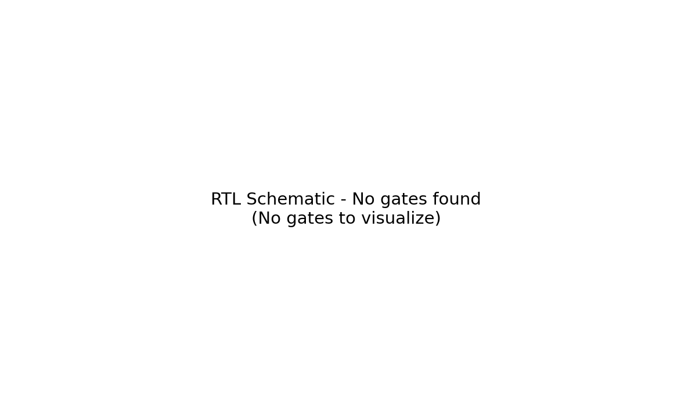
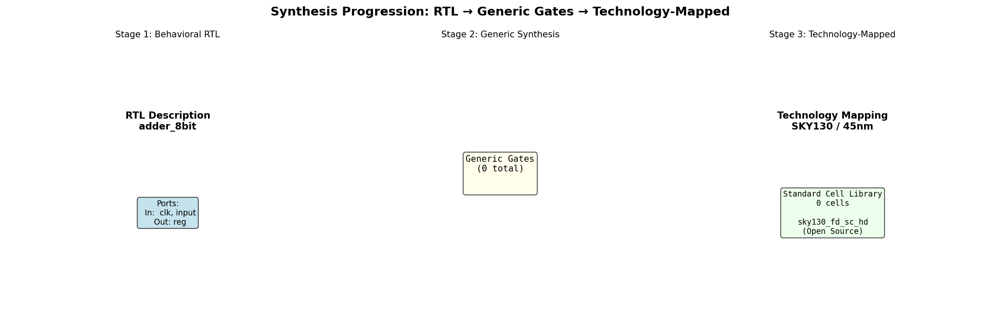
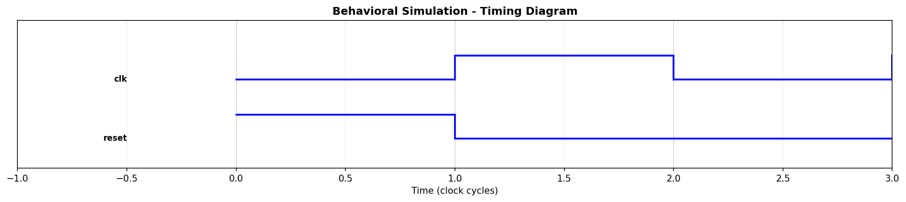

Design Visualization Suite
This tool provides comprehensive visualization of your digital design from RTL through final layout.
🔧 RTL Schematic
Detailed gate-level netlist visualization showing all logic gates and connections
⚙️ Synthesis Flow
Trace design transformation from behavioral RTL through generic to technology-mapped gates
📈 Waveforms
Timing diagrams and behavioral simulation showing signal transitions
🎯 Complete Flow
View the entire design pipeline: RTL → Synthesis → Place & Route → Layout
Design Information
Input File: adder.v
Generated: Multiple visualization stages with detailed analysis
Format: High-resolution PNG images (150 DPI) + Interactive HTML
RTL Schematic Visualization
Gate-level netlist extracted from Verilog RTL. Shows all logic gates, ports, and connections.

What You're Seeing
- Blue boxes: Input ports of the design
- Red boxes: Output ports
- Colored rectangles: Logic gates (color-coded by type)
- Lines: Nets connecting gates and ports
Synthesis Progression
Visual representation of the three synthesis stages:

Stages Explained
Stage 1 - Behavioral RTL: Initial Verilog description with module ports
Stage 2 - Generic Synthesis: Technology-independent gate mapping
Stage 3 - Technology Mapping: Mapping to actual library cells (SKY130)
Waveform Simulation
Timing diagram showing signal behavior during behavioral simulation.

How to Read
Each horizontal line represents a signal. Vertical transitions show clock edges and signal changes. Gray vertical lines mark clock cycle boundaries.
User Guide
Understanding RTL Schematics
The RTL schematic shows the actual gate-level implementation extracted from your Verilog code. Each colored box represents a logic gate:
- ■ AND gates
- ■ OR gates
- ■ NOT/Inverter gates
- ■ NAND gates
- ■ NOR gates
Synthesis Progression
Design synthesis transforms your behavioral description through three stages:
- Behavioral RTL: High-level description written in Verilog
- Generic Synthesis: Conversion to abstract logic gates
- Technology Mapping: Binding to physical standard cells from library
Reading Waveforms
The waveform diagram shows signal values over time:
- Horizontal: Time progression (measured in clock cycles)
- Vertical: Signal transitions between 0 and 1
- Edges: Show exact moment of signal change
Advanced Topics
Gate Sizing: Modern synthesis tools optimize gate sizes for timing and power
Clock Tree: Special routing for clock signal to minimize skew
Optimization: Tools like Yosys and Cadence Genus apply multiple passes